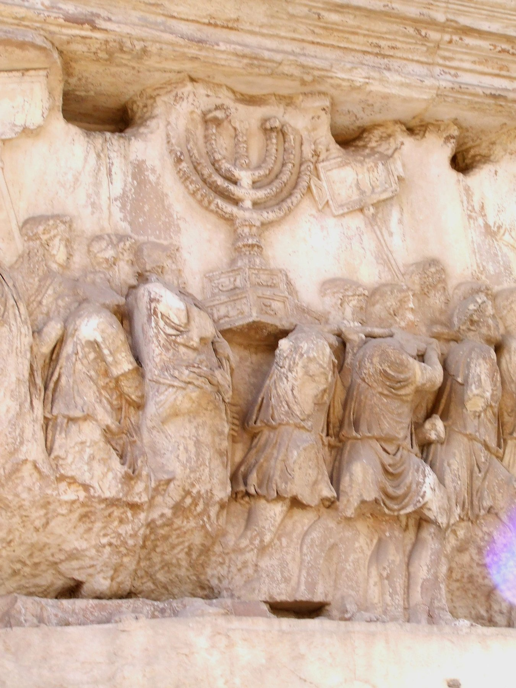

Arch of Titus Menorah Relief

- Find Name
- Arch of Titus Menorah Relief
- Description
- The south interior panel of the Arch of Titus on the Via Sacra in Rome, built c. AD 81 by Domitian after Titus's death to commemorate his deification and his victory over the Jewish rebellion. The relief, originally painted (yellow ochre for the menorah), shows the triumphal procession of AD 71 carrying Second Temple treasures: the seven-branched menorah, the Table of Showbread, and silver trumpets. The opposite panel shows Titus in a quadriga crowned by Victory, and the soffit shows his apotheosis carried to heaven on an eagle.
- Historical Period
- Roman Period
- Evidence Class
- Direct
- Interpretations
- A contemporary Roman depiction of the Temple vessels and the AD 70 sack of Jerusalem, confirming the Temple's treasures and their removal to Rome. The menorah shown here served as the model for the emblem of the State of Israel. It illuminates Jesus' prediction of the Temple's destruction (Matthew 24:1-2) without itself proving the prediction.
- Alternative Names
- Spoils of Jerusalem Relief
- Related Places
- Related Books
- Scripture Illuminated
- Biblical Significance
- The relief is the visual record of the Temple's destruction that Jesus foretold in Matthew 24:1-2, when he said not one stone would be left upon another; it shows what was carried out of the Temple he spoke of.
- Artifact Date
- c. AD 81
- Current Location
- Via Sacra, Roman Forum, Rome (in situ, still standing)
- Discovery Location
- Rome, Italy
- Timeline Era
- Early Church
Awaiting Review Not yet checked against scholarly sources. Treat its claims as provisional until this entry is reviewed. About verification
Sources: https://madainproject.com/arch_of_titus
https://encyclopedia.thefreedictionary.com/Arch+Titus
https://encyclopedia.thefreedictionary.com/Arch+Titus
Last reviewed: not yet reviewed